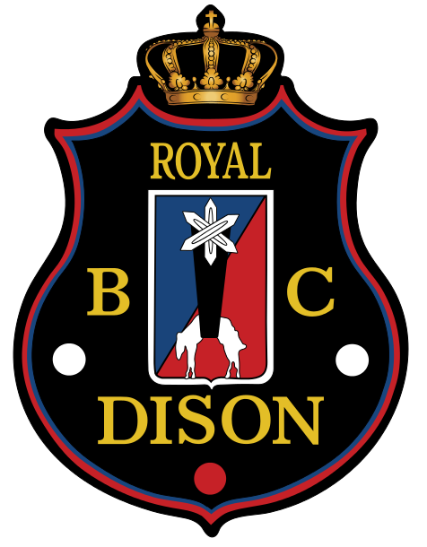
Préparer les rencontres, suivre les résultats, produire les feuilles de match et les feuilles récapitulatives : tout ce qui se fait dans l'administration du site.
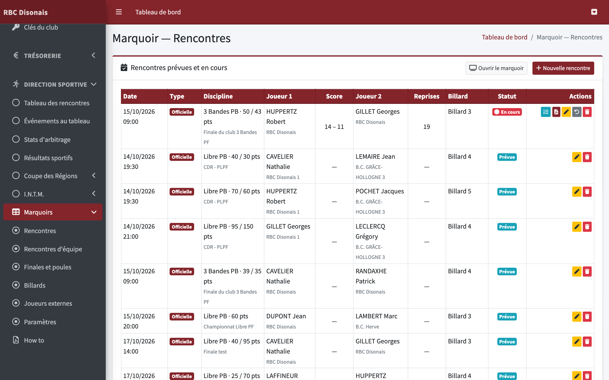
Administration › Direction sportive › Marquoirs
Paramètres : valeurs par défaut, e-mails, code PIN des Chromebooks.
Billards : noms, format petit/grand billard.
Rencontres : un match officiel individuel.
Rencontres d'équipe : la Coupe des Régions (3 matchs).
Finales et poules : 3 à 7 joueurs, chacun contre chacun.
Suivi en direct des scores, feuilles de match et feuilles récapitulatives en PDF, envoi par e-mail, commentaires, forfaits.
Ce qui se passe au billard — démarrer une rencontre, l'échauffement, l'arbitrage au pavé numérique, la pause, les corrections : tout est expliqué dans le mode d'emploi des joueurs, « Marquoirs : How To » (Documents utiles du site).
Officiel ou amical ? — Les rencontres créées ici sont officielles : elles sont publiées en direct sur le site et ont une feuille de match. Les parties amicales, à 2 ou à 3 joueurs, sont lancées par les joueurs au Chromebook (nom, prénom et points seulement) ; elles apparaissent dans les listes mais ne sont jamais publiées et n'ont pas de feuille de match.
Les noms des joueurs — Tapez deux lettres : les membres du club et les joueurs externes déjà rencontrés sont proposés, avec leur licence et leur catégorie. Un nouveau joueur externe est retenu automatiquement pour la fois suivante.
La catégorie — Elle remplit d'office les points à jouer (barème) et sert à départager à la moyenne proportionnelle quand la limite de reprises est atteinte, ou en finale.
Marquoirs › Paramètres — à régler une fois
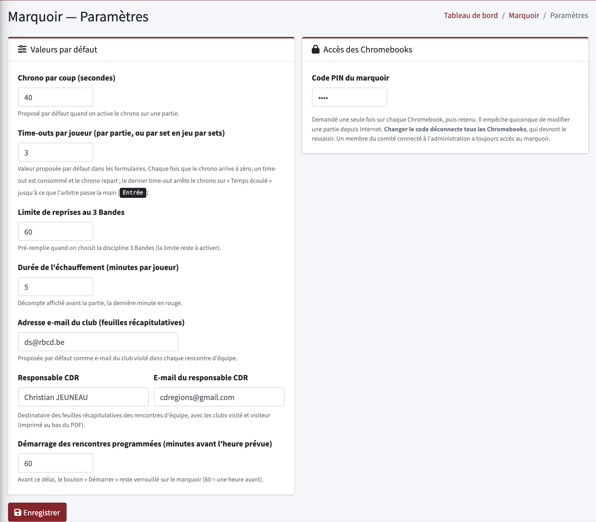
Code PIN — saisi une seule fois sur chaque Chromebook, à l'adresse rbcd.be/marquoir/acces. Sans lui, toute page du marquoir renvoie vers l'accueil du site (personne ne peut y entrer depuis Internet). Le changer déconnecte tous les Chromebooks : il faudra le ressaisir sur chacun.
Marquoirs › Billards — un Chromebook par billard
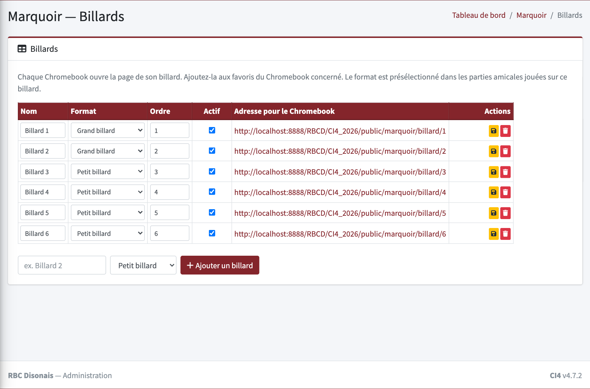
Enregistrez chaque ligne avec la disquette jaune. La ligne du bas ajoute un billard.
Marquoirs › Rencontres › « Nouvelle rencontre »
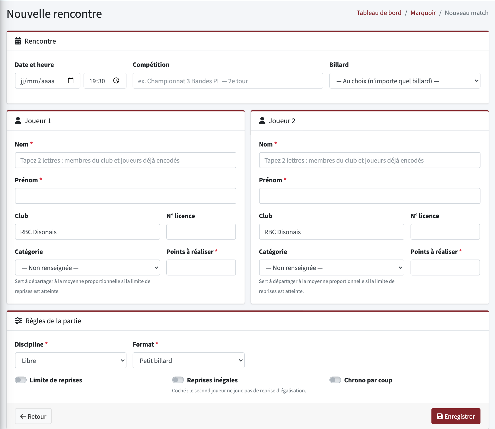
Le joueur qui commence (choisi au billard) passe toujours à gauche, en blanc : l'ordre des joueurs ici n'a pas d'importance.
Marquoirs › Rencontres
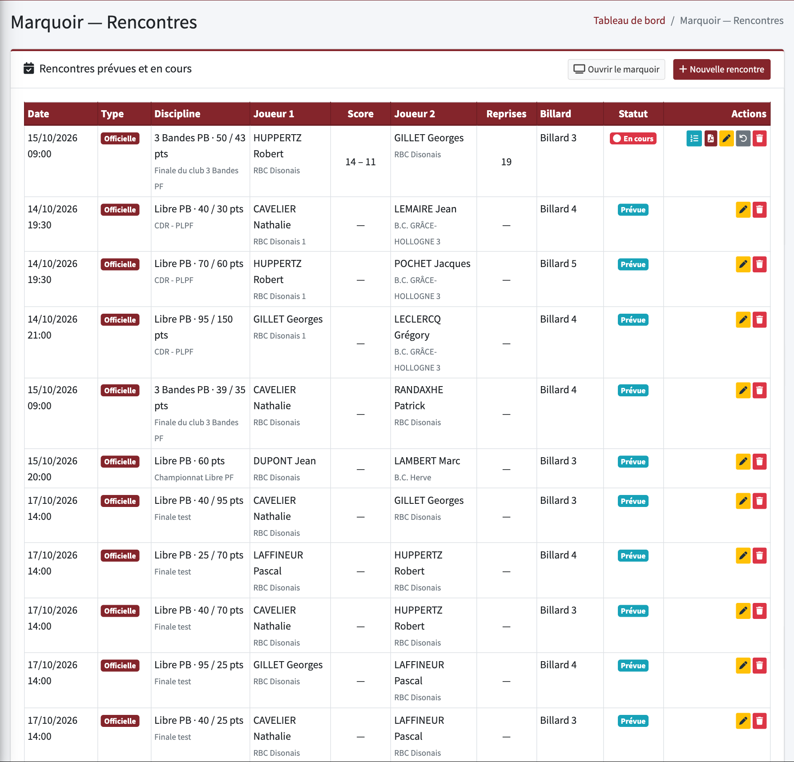
En haut, les rencontres prévues et en cours ; en bas, toutes les parties officielles terminées (les amicales restent visibles le jour même sur la page du billard, puis sont effacées après 48 h). En fin de saison, Nettoyer les rencontres efface les parties terminées ou annulées et les rencontres d'équipe et finales terminées ; le reste est conservé.
« Ouvrir le marquoir » : un membre du comité connecté y accède sans code PIN.
Icône d'une rencontre jouée
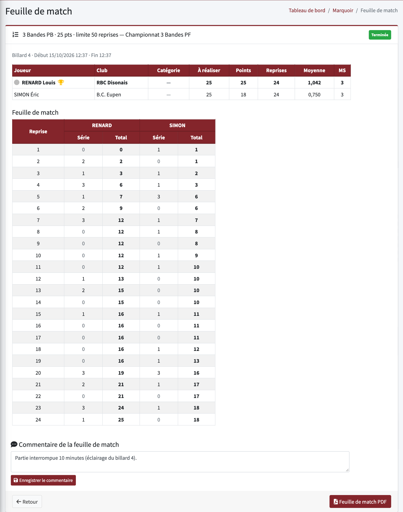
Limite de reprises atteinte sans vainqueur : le marquoir départage à la moyenne proportionnelle (moyenne ÷ moyenne minimum de la catégorie) ; elle apparaît alors dans le résumé.
Une erreur de score se corrige au billard (menu ⌫ › « Corriger une reprise »), même après la fin de la partie.
Marquoirs › Rencontres d'équipe › « Nouvelle rencontre d'équipe »
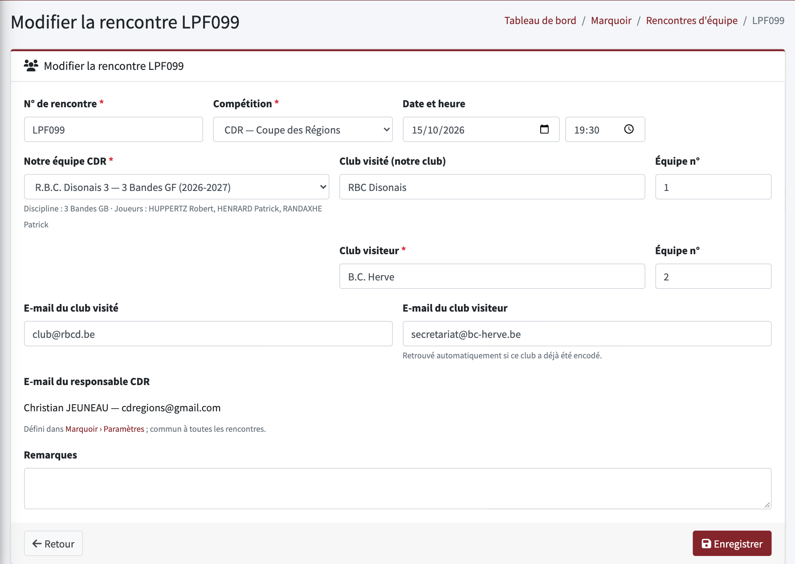
Le responsable CDR (copie de chaque envoi) se règle dans les Paramètres.
Fiche de rencontre › « Ajouter un match »
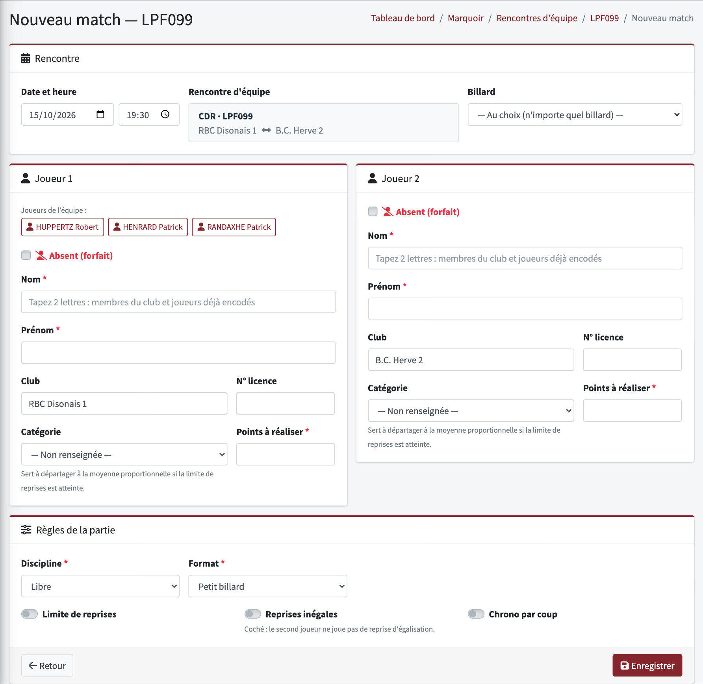
Joueur absent — cochez « Absent (forfait) » : son nom et ses points deviennent facultatifs (il apparaît comme « ABSENT »). Le match est aussitôt terminé : 0 point de match pour l'absent, 2 pour son adversaire (0 chacun si les deux sont absents).
Un match déjà encodé comme rencontre individuelle peut être rattaché à la fiche (et détaché).
La page de la rencontre
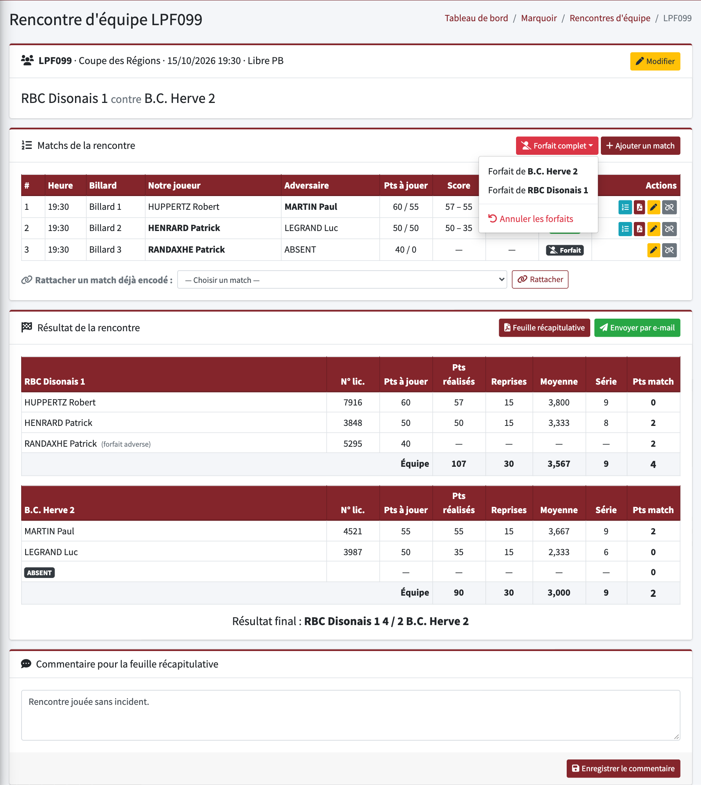
Marquoirs › Finales et poules › « Nouvelle finale ou poule »
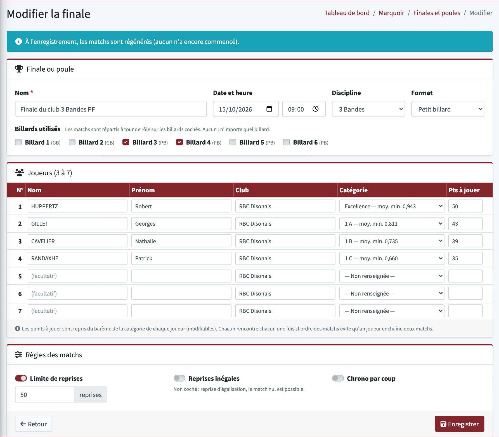
Tant qu'aucun match n'a commencé, tout est modifiable (les matchs sont régénérés) et la finale peut être supprimée avec ses matchs. Ensuite, seuls le nom et la date changent.
La page de la finale
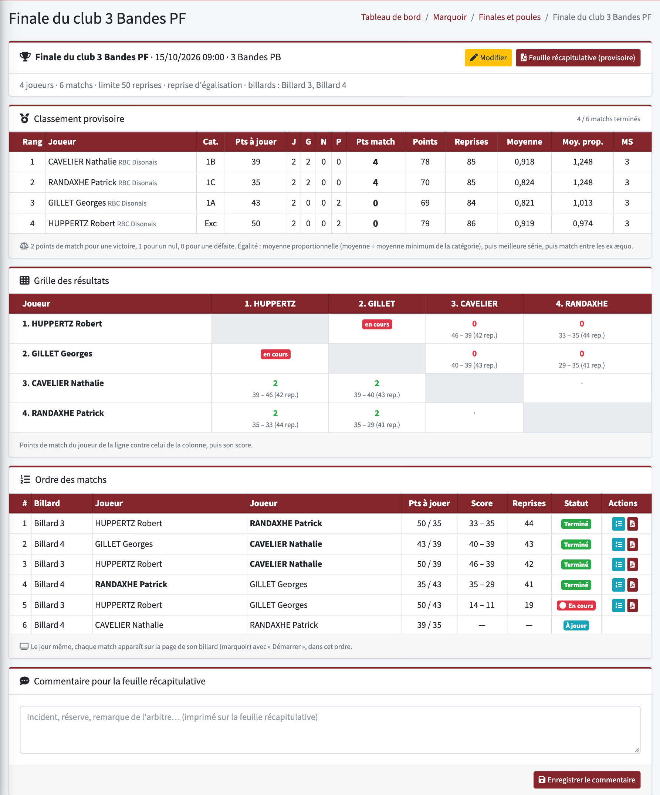
Marquoirs › Joueurs externes
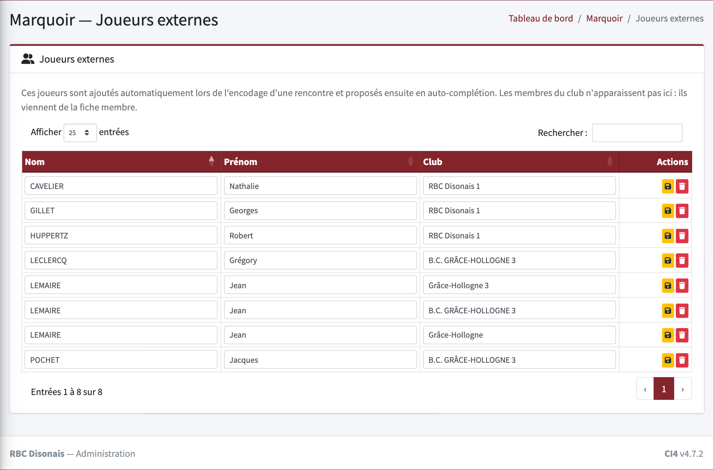
Un joueur s'est trompé de score — au billard : ⌫ › « Corriger une reprise ». Pas besoin de l'administration.
Mauvais nom ou mauvais points à réaliser pendant la partie — au billard : ⌫ › « Modifier la partie en cours » (les reprises sont gardées), ou ici avec .
Rencontre lancée par erreur — « Remettre à zéro » : elle redevient « prévue ».
« Démarrer » reste grisé — la rencontre est prévue pour plus tard : il se déverrouille une heure avant l'heure (Paramètres).
Un Chromebook affiche l'accueil du site au lieu du marquoir — le code PIN a été changé ou les données du navigateur ont été effacées : ouvrez rbcd.be/marquoir/acces et ressaisissez-le une fois.
En direct — les rencontres officielles du jour sont visibles sur le site (Saison › En direct), jamais les amicales.